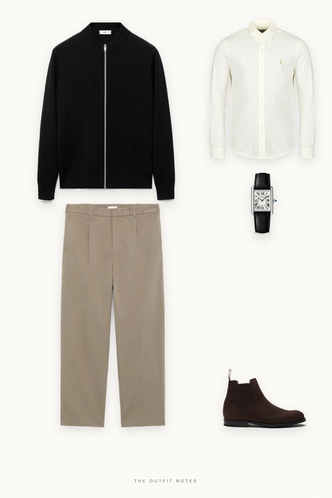

Dinner Black
cream shirt, dark knit

What to wear for Christmas dinner as a man: a black zip knit cardigan over a cream Polo Ralph Lauren oxford shirt, mole taupe trousers, Church's brown suede chelsea boots and a Cartier Tank. A holiday party outfit for men that looks sharp, dark on top and soft below, with no tie needed.
The pieces
This page contains affiliate links: if you buy through them, we may earn a commission at no extra cost to you. Disclosure.
 Mango
Mango
Black zip-up knit cardigan
Shop Polo Ralph Lauren
Polo Ralph Lauren
Cream button-down shirt
Shop ARKET
ARKET
Taupe pleated loose-fit trousers
Shop Church's
Church's
Brown suede chelsea boots
Shop Cartier
Cartier
Tank must watch
Shop
Prices are indicative, taken when the look was published, and may have changed. Pictures of the outfit are AI-generated illustrations of real products; the product photos are the retailers' own.
Published 1 October 2026.